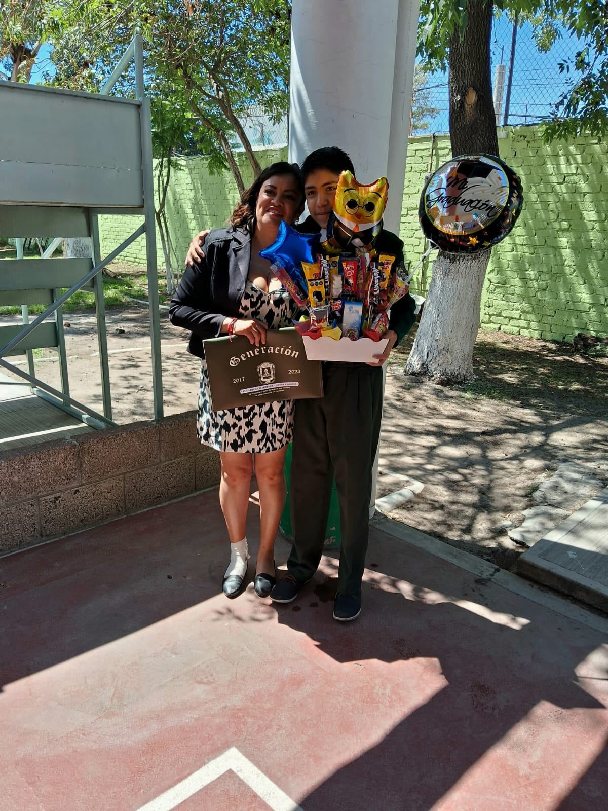

| inicio | biografia | familia | amigos | peliculas |
Somos una familia muy unida nos apoyamos en todo cuando hay problemas se dialogan, si hay problemas en casa se habla y le encontramos solución, no faltan las discusiones mi hermano y yo.
Mi madre lleva un rol muy importante es la que se encarga de los problemas secundarios de la casa como por ejemplo si no encuentro ropa, objetos etc... ella los encuentra, cuando mi hermano sufre alguna caída a ella recurre ya que nos tiene mucho amor, cuando tengo problemas tanto como en el colegio como en la casa recurro a ella
Con mi mama salimos a centros a comerciales, la acompaño a comprar ropa, o como otras cosas mi familia es muy alegre. La familia es el motor de vida o más bien para mi o como para muchos, cada vez que me levanto para ir al colegio es para ir saliendo adelante llegar ser alguien en la vida, por sacar adelante a mi familia
Cuando me pongo a pensar sobre mi familia, sobre todo lo que me han enseñado, como me han educado, me doy cuenta de la suerte enorme que tengo en ser parte de una familia como la mia.
